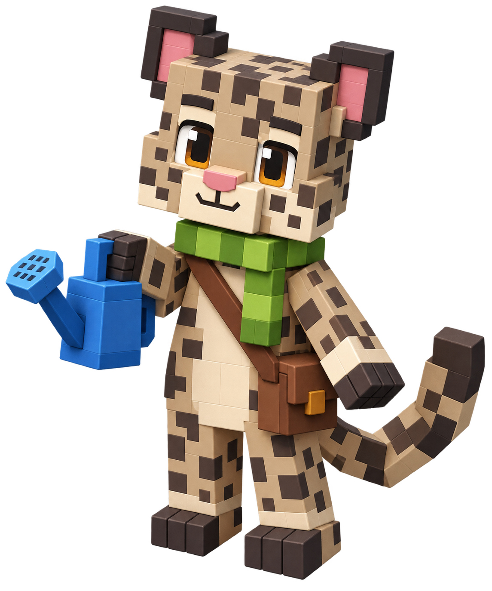

Choose one gentle care action each day to balance light, water, and soil.
Choose one gentle care action each day to balance light, water, and soil.
Quick guide
Each care card shows its exact trade-off. Keep sunlight, water, and soil in their healthy bands for three days.
Today's orchard note
This day will reset, but your best leaf count stays on this browser.

Orchard notes